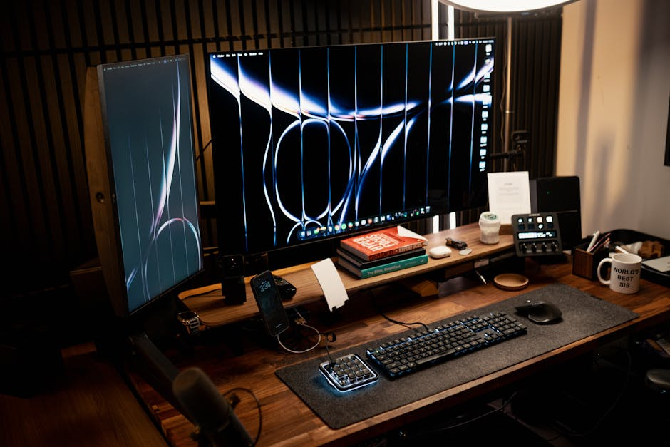
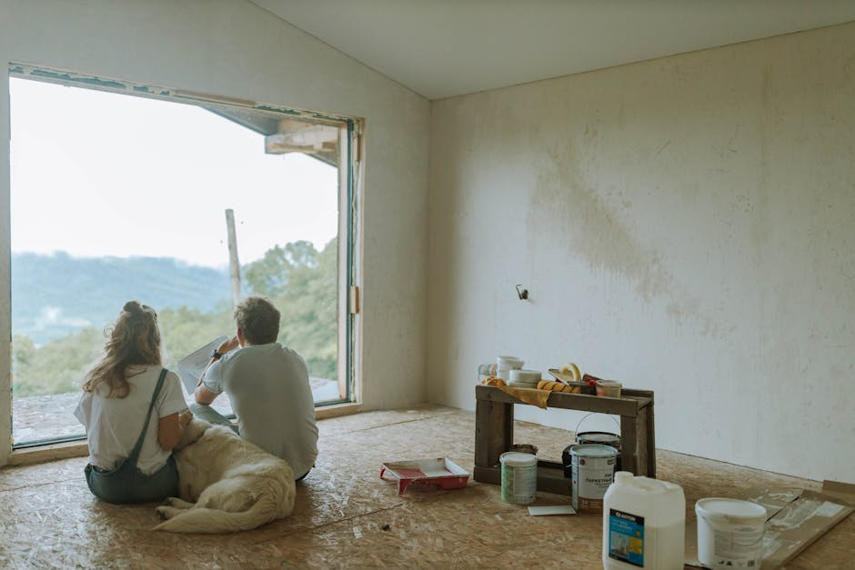
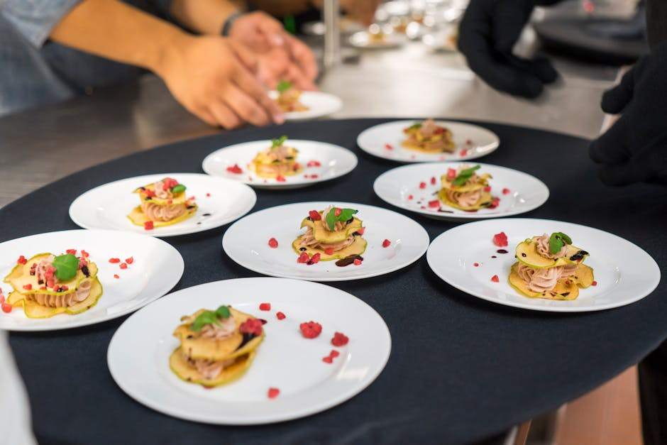

Scopri le Eccellenze della Gastronomia Locale
Everyflow Digital ti accompagna in un viaggio sensoriale tra i ristoranti consigliati, le eccellenze del territorio e le trattorie che custodiscono i segreti della cucina tradizionale italiana.

Chi Siamo e la Nostra Missione
Celebriamo l'arte culinaria e i luoghi che rendono unico il nostro patrimonio gastronomico.

Il Cuore della Gastronomia Locale
Benvenuti nel mondo di Everyflow Digital, il punto di riferimento editoriale per chi ama la buona tavola e la ricerca dell'autenticità. La nostra missione è esplorare, documentare e raccontare l'evoluzione della gastronomia locale, valorizzando chi lavora con passione dietro i fornelli.
Selezioniamo con cura i luoghi dove il cibo diventa cultura, offrendo ai nostri lettori una panoramica onesta e dettagliata sulle migliori osterie, i locali d'avanguardia e i ristoranti che mantengono viva l'anima della cucina tradizionale. Una bussola affidabile per orientarsi tra i sapori veri.
La Nostra Guida Editoriale
Tutto ciò che ti serve per scoprire la prossima meta della tua esperienza culinaria.

Recensioni Ristoranti Approfondite
Analizziamo minuziosamente i menu, la qualità del servizio e l'atmosfera per offrirti recensioni ristoranti indipendenti, oneste e ricche di dettagli utili per la tua scelta.
Guida alle Trattorie e Osterie
Un viaggio affascinante alla scoperta dei sapori di una volta. Diamo voce alle trattorie storiche e alle osterie di paese dove la vera cucina tradizionale viene tramandata di generazione in generazione.
La Selezione dei Ristoranti Consigliati
Curiamo liste tematiche e aggiornate dei ristoranti consigliati per ogni occasione: dalla cena romantica all'incontro d'affari, fino al pranzo domenicale in famiglia all'insegna del buon cibo.
Domande Frequenti
Le risposte alle curiosità dei nostri lettori.
Come selezionate i ristoranti consigliati?
La nostra selezione si basa su criteri rigorosi: la qualità e la freschezza degli ingredienti, il rispetto per le materie prime, la maestria tecnica in cucina e l'accoglienza in sala. Valutiamo l'esperienza nel suo complesso.
Le vostre recensioni ristoranti sono indipendenti?
Assolutamente sì. La nostra linea editoriale impone che le visite ai locali avvengano spesso in forma anonima e che le valutazioni siano espressione libera dei nostri critici gastronomici, senza influenze commerciali.
Coprite solo l'alta cucina o anche le trattorie?
Crediamo fermamente che l'eccellenza non risieda solo nel fine dining. Diamo grandissimo spazio e valore alle trattorie e alle osterie che portano avanti con fierezza la vera cucina tradizionale.
Come posso segnalare un locale di gastronomia locale?
Incoraggiamo i nostri lettori a condividere le loro scoperte! Puoi utilizzare il modulo di contatto presente in fondo a questa pagina per segnalarci il tuo locale preferito. La nostra redazione valuterà la segnalazione.
La guida è aggiornata regolarmente?
Sì, il panorama della ristorazione è in continua evoluzione. Aggiorniamo costantemente le nostre liste, seguendo i cambi di stagione nei menu, le nuove aperture e l'evoluzione dei locali storici.
Cosa Dicono i Nostri Lettori
L'opinione di chi utilizza la nostra guida per scoprire nuovi sapori.
"Grazie a questa guida ho scoperto un'osteria fuori città che serve i piatti tradizionali esattamente come li faceva mia nonna. Le recensioni sono precise e veritiere, senza fronzoli. Un punto di riferimento."
— Marco T., Appassionato di cucina
"Uso regolarmente le liste dei ristoranti consigliati per organizzare cene di lavoro. Non mi hanno mai deluso. Le descrizioni dell'atmosfera e del servizio sono sempre azzeccate."
— Elena R., Consulente
"Il modo in cui raccontano le storie degli chef e la filosofia dietro i piatti mi ha fatto innamorare ancora di più della gastronomia locale. Lettura obbligatoria per i foodie."
— Giulia M., Food Blogger
Segnala un Locale o Contattaci
Hai scoperto una trattoria imperdibile o vuoi inviarci un suggerimento per la redazione? Scrivici.